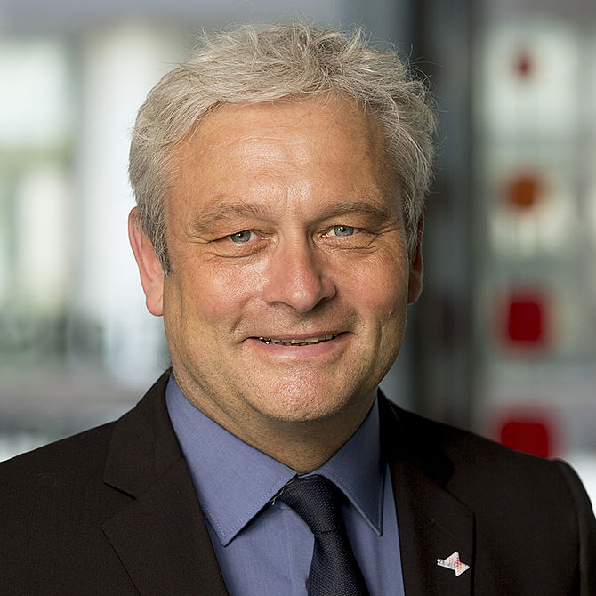

Dietrich Rebholz-Schuhmann
Professor Dietrich Rebholz-Schuhmann is the Scientific Director of ZB MED – Information Centre for Life Sciences. At the same time, he is a Professor of Information Processing, Exploitation and Support at the Medical Faculty of Cologne University. Rebholz-Schuhmann is a medical doctor and a computer scientist. His research is positioned in semantic technologies in the biomedical domain. In his previous research, he has established large-scale on-the-fly biomedical text mining solutions and has contributed to the semantic normalisation in the biomedical domain. He has published more than 170 publications including contributions to high-profile journals, has been contributing to community efforts (e.g., ECCB steering committee), and is editor-in-chief of the Journal of Biomedical Semantics. Dietrich's main research interests are biomedical informatics, literature analysis, ontologies, Semantic Web and Information representation. Dietrich's Google Scholar profile claims more than 4262 citations with an h-index of 38.